Brexit means decolonisation

The EU’s position paper called Essential Principles on Citizens’ Rights demands, among other things, that:
The Commission should have full powers for the monitoring and the Court of Justice of the European Union should have full jurisdiction corresponding to the duration of the protection of citizen’s rights in the Withdrawal agreement.
If the ECJ can be an mediator in every interaction the UK government or a company has with an EU citizen, then we will still have no ability to fix any of the pressing issues facing this country, including the still unresolved causes of the 2008 crash. Every government policy has winners and losers. Every bad policy has some corner-case where someone benefits from it.
With 3 million or more EU citizens, any issue can be turned into an issue affecting an EU citizen providing forum shopping and then the EU law will apply.
The idea of everyone being equal before the common law and that UK judges are trusted to apply it is anathema to the EU’s Napoleonic position that only the ECJ can be trusted to protect EU citizens.
This is really a “special interest”/“closed shop” self serving argument, if national courts can be trusted, there is no point to the EU. To protect its own need to exist, the EU has to insert itself into everything, even if it is not needed.
The US Supreme Court doesn’t need to interfere if an American citizen resident in the UK has a problem with a public institution or company, that American just uses the normal UK courts to plead their case.
The UK has residents who hail from the whole world including millions of citizens from the other 169 countries in the world that are not in the EU. They manage quite fine to use the existing UK Courts. They don’t need their legal systems to intervene in British law.
Note there is no reciprocal right in the proposal for British citizens living in the EU to call for assistance from the British courts.
This whole lop-sided proposal shows how the Euro-federalists see the UK as a difficult colony, not as an independent country or let alone as an equal partner.
Staying under the law of the EU is not Brexit, we would have just moved from a colony with very little say of how we are governed to a colony with no say over how we are governed.
It is not the independent country that people voted for.
Facebook is dead - long live the mesh
For those reading later, Facebook was an early 21st Century “Social Network”, it was web application that you can sign up to and share text and pictures with other users.
1. Tangent on why I don’t use Facebook
I was at University when Facebook started so I got an early invite when it was a University based system. I quit in 2006 when it became available to the whole public and stopped being connected to the physical campus. I am not some kind of elitist, it just lost any meaning to me at that point. I am surprised it is still going a whole decade later.
There are no real barriers to talk any of my old school friends, many have parents still living in the same place as my parents and moving in the same circles as my parents but for whatever reason we didn’t bother keeping up.
Suddenly, I was being collected by such people in the race to get more ‘friends’ and was being distracted with requests to play scrabble and vote on things and so on.
Many normal people seem to have taken on this horrific American practice of presenting a horribly bland PR-style over-positive view of yourself. Everyone on Facebook is Hyacinth Bucket from Keeping Up Appearances.
Unless, like Pheidippides, you brought important news about how you have defeated the Persians and then died on the finish line, I don’t really care about the marathons you are training for.
Unless you are sending me a slice, I don’t care about the cake you made. Unless you have wired it up as an IoT project, I really don’t care about your cat.
2. From the Web to the Mesh
For those in the military and Universities, we made our own networks. To provide internet to homes and businesses, commercial ISPs moved in.
This however was not the only possible model. Before BT was privatised, it had its own plan to provide a national data network to be run by the post office.
Since then, hundreds of municipal wireless networks have been setup. Wikipedia maintains a big list.
Rather more interestingly, there are many attempts to get away from the centralised, corporate/government controlled Internet altogether.
Remove the ISPs, the DNS, etc and just depend on distributed Mesh Networks where every node has everything required to fully connect to the other nodes. This is a mathematically superior approach which in the end will require a lot less electricity, bureaucracy and cost.
However, when all nodes are equal, there is not any obvious point where organisations like the CIA or GCHQ can stick themselves as a man in the middle, and there is little ability for the government to censor or cut anyone off using easy digital means.
But it is fine. It is too expensive to make water pipes care if you use the water for drinking, cleaning your car or for water boarding a terrorist suspect.
It is not economic to replace the roads with special surfaces that turn to mud if a bank robber is performing a getaway.
3. I still miss Gopher
In 1991, the leading Internet content protocol was Gopher. It had automatic client-side formatting and strong typing of content files, removing many security problems that WWW faced.
It was also easy for anyone to add to gopherspace, you didn’t need coding or graphic skills.
However, WWW was completely public domain so won, despite its technological shortcomings. By 2017, we have lots of tools like markdown, bootstrap, Jekyll/Sphinx etc which mean you don’t have to put a lot of work into making a readable website.
This blog is statically generated using Sphinx and there is no serverside code. I am paying absolutely nothing for you to read this.
It is getting easier all the time, but it is still not as easy as it should be to add your own content to WWW.
5. Jesus Vs Pontius Pilate
Pontius Pilate served as governor of Judaea then retired to his villa in Rome. Did he even remember executing Jesus? To him it would have seemed like one of many local disputes he dealt with. Being a colonial overlord was known to be a hard gig.
Pilate got a lot of bad PR, being the baddy of the Easter story but that was later. Pilate was most probably already dead long before Christianity spread far enough for Rome to notice it.
Jesus got tortured and executed then got a billion followers and a seat at the right hand of God, but no villa.
Jesus had two friends named James, his brother and James, son of Zebedee. One was thrown off the temple and/or stoned to death, the other had his head cut off with a sword (Acts 12:1-2). James does have a cathedral built over where his head was buried but he didn’t get a villa either.
It is one thing to get millions or billion of followers, it is another thing to keep your head on your shoulders as well.
6. The silent majority
I never really felt like being a Jesus figure. Most people don’t, I talked a lot about the silent majority before.
The loudest people in tech are from the West Coast of the USA. Meanwhile, software developers and professors working within Universities can go native and be as left wing as the other professors.
However, the vast majority of developers are like the majority of most other people, just in the centre.
The crazy far-left minority are just disproportionately loud. When they bring their politics into a space or event not to do with politics, people mostly just politely humour them and nod along while looking at their watches or checking their phones.
No one breaks their bubble, people are keen not to prolong it any further. They have organised childcare or transport and want to just get on with fly-fishing or software development or whatever got them to the event.
Those far-lefties without self awareness may take this to mean everyone agrees, however this is a mistake, they are unprepared for events like Brexit or Trump when the majority show they don’t really care that much about their sacred cows.
Once all the centrist and the conservative speakers have been purged from Facebook, the silent majority will just silently fade out as their timeline gets boring and other things get invented that are more interesting than pictures of cats.
VR, IoT, the Mesh’s first killer app, whatever. There is always something new.
7. Technology is progress
A lot of the crazy left today is anti-technological. It is mathematics that will save the world not socialism or “Intersectionality”.
The famous book by Kernighan and Ritchie (K&R) has done more to progress humanity than Marx’s Communist Manifesto.
As I expressed in parts 14 and 15 of my previous essay: politics, as expressed in parliament, is really not that important. It is just dealing with the effects of technological change.
The character of Viktor Komarovsky in the famous Boris Pasternak novel Doctor Zhivago is a businessman or fixer who works with and benefits from the aristocracy. When Communism takes over, he carries on in the same role just with new clients.
Over the Twentieth Century, politics and culture have lurched back and forth from free market capitalism to socialism to this current corporatism and now we may be going back to capitalism.
However, software has just pressed on. From Turing through to K&R to Linus Torvalds and so on, we are in a line. Moore’s law, the compiler, the web, robotics, AI, the singularity. No one can stop us.
The Deplorables vs the Hysterics - from Maastricht to Trump

2016 led to a clear divide between the Deplorables and the Hysterics. Where did this come from? What is the historical context of Brexit? What should we in the UK make of President Trump? What role did technology play in making this division?
This is another long read typed at the speed of thought, as always, corrections and improvements are appreciated.
1. Where to begin
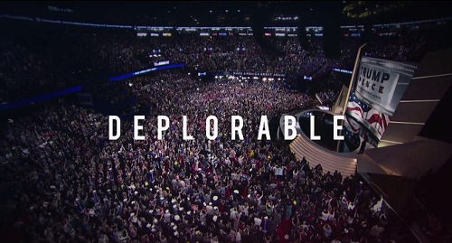In my first essay on Brexit, Rome Vs The Matrix, I started at the last Ice Age and went through each of the attempts to include Britain in a United Europe project. This post will be somewhat more modern.
The 1975 referendum was a Labour affair, the pro-EU yes campaign led by Harold Wilson and the No campaign led by the great Tony Benn.

In 1975, Benn and the leavers were accused of wanting to turn the UK into an island of socialist utopia, it is not so relevant to this current hysteria.
Therefore, I will start my story at 1992, for in retrospect, this is where the Leave campaign began its march to successfully winning a referendum on leaving the EU in 2016.
1. Maastricht Rebels - the battle of the bastards
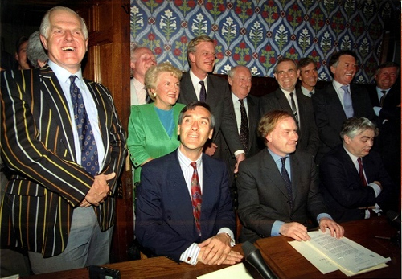One of the reasons that Prime Minister Margaret Thatcher’s long and electorally successful leadership was challenged by her own party was her resistance to further European integration.
Under her more successor, John Mayor, the 1992 Maastricht Treaty was negotiated. This converted the European Community to the European Union, including European Economic and Monetary Union (the Euro being finally set up on in 1 January 1999), but also lots of other areas of policy being handed over to the European level.
This was not popular in the British parliament. Ratification was not easy or quick and took another 18 months. A vote on one wrecking amendment was tied 317-317 and only defeated because of the 1876 convention of the speaker breaking ties by voting no.
Prime Minister John Major famously called three members of his cabinet (Michael Howard, Peter Lilley and Michael Portillo), the “bastards” - which was a still a controversial insult back in 1993.
Meanwhile, while this Tory civil war was happening in Parliament, over at the Bank of England and the Treasury, there was a different European problem.
The inability to find an interest rate that would fit both Germany and the UK led to a run on the pound and consequently the UK being ejected from the European Exchange Rate Mechanism on Black Wednesday, further pushing the UK away from Europe.
The combination of Black Wednesday, the way Thatcher was deposed and the way Prime Minister John Major ruthlessly pushed the Maastricht Treaty through parliament, splintered his party and the wider conservative movement, and now in retrospect, sowed the inevitable seeds of Brexit.
The elite MPs in control of the party machine had become de-anchored from the mass of the Conservative party membership and the general public. This led to a landslide defeat at the 1997 election and 13 years out of power.
However, those anti-EU forces created in the Maastricht ratification process continued in the background.
Some of the leading 1992 rebels are still in parliament, for example, Sir Bill Cash. While some of the younger ones, such as Dr Liam Fox and Iain Duncan Smith, became the backbone of the Leave campaign.
Outside of the Tories, UKIP was began in response to the Maastricht Treaty, it came into being between 1991 and 1993. On the day John Major signed the Maastricht Treaty, an up and coming 27 year -old conservative called Nigel Farage quit the Tories and became UKIP’s first nationally recognised leader.
2. The great Euro non-debate

By 1996, Britain’s place in Europe was not clear, with the Tory members and much of the public wanting less Europe, while the pro-EU John Major and big business wanting the UK to join the Euro in time for its launch in 1999.
For ten years between 1995-ish to 2005-ish, there were two competing campaigns on the Euro.
There was the campaign, financed by big business, for Britain to join the Euro, with prophesies of doom and irrelevance if the UK didn’t join.
This culminated in the group Britain in Europe led by Tony Blair (in theory but unwilling to expend political capital on it), Gordon Brown (in theory but in practice going the other way, as we shall see below) as well Ken Clarke, Michael Heseltine, Charles Kennedy and so on.
Meanwhile, on the other side, the was No Campaign primarily backed by Sir Tim Rice of musical theatre fame and supported by all the “bastards” from part 1 above.
All this preparation by the two campaigns happened in a kind of political-geek parallel universe, it never bothered the general public. Eventually, the money ran out and the two campaigns faded out before they really started but it was a practice run for 2016 when many of the same characters and same old arguments would re-emerge.
3. Things can only get better

In the 1997 election, Labour outflanked the pro-EU John Major by pushing the Euro question into the long grass, with the famous five Economic Tests, reportedly invented by Ed Balls in the back of a New York taxi.
A work of electoral genius, Labour now had defused its own European divisions with this technocratic measure. Those against further integration could see the tests were not currently met and could hold faith that convergence would never happen, while those in favour of further integration could hold faith that convergence would naturally occur and the tests would one day be met.
As it turned out, the UK and Eurozone economies diverged and the prospect of the UK joining the Euro stopped becoming a realistic option to anyone but the most extreme Euro-federalists, a rare breed in the UK.
The UK entered the 2008 financial crisis with more dodgy banks and a bigger national deficit than most of the Eurozone, including Southern Europe.
However, the UK having an independent currency acted as an automatic stabiliser and the UK made it through the crisis relatively unscathed in the short term.
Meanwhile, those in Southern Europe, lumbered with an unsuitably strong currency, suffered immeasurably more, proving the UK had dodged a bullet. The economic situation of Greece is what the alternative future of the UK could have been had we adopted the Euro currency.
4. Big business credibility problem

The abortive pro-Euro campaign was led by big business such as the City of London banks, Lord Sainsbury and so on, as well as the international institutions and think tanks. The exact same people and organisations that came back in the Remain Campaign of 2016. Not entirely, some like James Dyson and JCB had moved to the Leave campaign.
A lot of the “project fear”-type arguments had been made in the late 1990s and early 2000s about staying out of the Euro. However, the reality of the financial crisis had proved them all wrong, not entering the Euro had saved the UK.
The credibility problem of the UK pro-European campaigners was pretty clear to anyone with eyes to see in the outcome of the UK financial crisis.
Those against the EU since 1992 had been largely winning on democratic and legal grounds but losing the economic argument. However, in the aftermath of the financial crisis, the economic argument for the EU as an economic magic bullet was becoming increasingly untenable as the UK economy recovered steadily while the populations of many Eurozone countries were being collectively punished with mass unemployment in order to keep their economies within the Euro.
This is the background to the later Michael Gove style argument, why trust these people and groups when they always get their predictions wrong?
5. Lisbon Loons
The 2010 Conservative manifesto was called “Invitation to join the government of Britain” (PDF) and on pages 113 to 114 (pdf page number 124-125), promised a referendum before handing over any more powers to Europe.
However, when it came to the Lisbon Treaty, David Cameron weaseled out and said the promise would apply to every treaty after the Lisbon Treaty.
The Lisbon treaty was a massive step forward in the federalisation of Europe and the last major treaty likely to be approved for a long time, so Cameron’s promise turned out to be worthless (like all his other promises).
Some Tory MPs tried to honour the promise anyway, here we quote a 2013 Guardian Article:
The senior Tory made the remarks - in earshot of journalists - after being asked about the decision of 116 Tory MPs to defy the prime minister and vote in favour of an amendment regretting the absence of a EU referendum in the Queen’s speech.
The Conservative said: “It’s fine. There’s really no problem. The MPs just have to do it because the associations tell them to, and the associations are all mad, swivel-eyed loons.”
Major called his rebel MP bastards, the Cameron set now considered the largely Eurosceptic rank and file to be “mad, swivel-eyed loons”. Cameron had the coalition with the Liberal Democrats to average out the Eurosceptism of the Tory membership.
6. Cameron in a corner
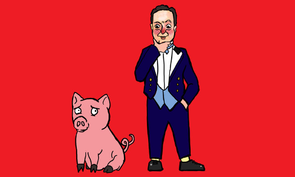Cameron entered the 2015 election with a promise to renegotiate its relationship with Europe and put that to an in/out referendum - page 72 (PDF page 74) of the 2015 manifesto (PDF).
How this was supposed to work in David’s Cameron’s mind probably involved the context of a coalition with the Lib Dems.
In the months before the 2015 election, the media has factored in an Ed Miliband victory or at least the unpopular David Cameron would be scrabbling around for a coalition with the Lib Dems who might be smaller but still significant.
Instead, the Tories won an outright majority, not least because the referendum pledge re-united the grassroots behind the government rather than UKIP. Cameron came back into power in 2015 with a party more Eurosceptic than ever.
The most pro-EU party, the Lib Dems went from 57 seats to 8 seats, i.e. an 86% loss.
While many MPs were loyal to David Cameron in the referendum, they were answerable to extremely Euro-sceptic local parties, and constituencies that were increasingly Eurosceptic too.
In the manifesto, David Cameron had promised to hold the referendum by the end of 2017, however pretty much the day after the 7th May 2015 election, Britain’s place in the EU became the hot topic to the exclusion of everything else.
Almost a year later, in April 2016, I remember thinking then that pretty much every argument that could be made, had been made. Luckily, David Cameron set the date of the vote to the 23rd June.
On the 24th of June, I was like phew, finally we can talk about something else but Britain leaving Europe, but no, the losing side didn’t disarm but carried on campaigning. We still are drowning in this one issue. Anyway I am getting ahead of myself.
Why did Cameron hold the vote earlier than needed? Did he believe it the European issue was preventing progress on any other issue? Did he believe he had it in the bag? Did he want a successful remain vote to be his legacy act before leaving the stage?
Perhaps his hand was forced by Merkel and Hollande, not wanting the UK relationship to become an issue in the 2017 French and German elections (well they failed there).
7. The campaign

I have talked a lot about the campaign and why leave won and the mistakes made by remain. Remain didn’t put their best arguments first. Remain didn’t update their arguments to take account of the 2008 financial crisis and the situation in Greece.
The Leave campaign had seen all the remain arguments coming from 15 years before and were ready for them.
I have covered the economic side in other posts and why Brexit didn’t cause an immediate recession as promised by the project fear (which had lost all credibility in the previous iteration 4 - The Gove argument).
I could talk about a lot of things but want to focus one thing, namely what those who wanted to leave were called by the remain campaigners.
Like “bastards” and “mad, swivel-eyed loons”, the elite hysterically called the people names. I went back to the 9th June 2015 edition of Question Time (link will expire 12th June 2017) and made a list, in this single program, leavers were called:
- Economically illiterate
- Manics that want to burn the economy
- Little Englanders
- Uneducated
- Trying to cause third world war in Europe.
- Liars
- Nazis
- Removing hope from the world
- Causing the breakup of the United Kingdom
- Want to cause a civil war in Northern Ireland
This was just one episode of one program, we had months of it. Later in the campaign it escalated to:
- Old people should not be allowed to vote
- Leavers are all racists that caused the Murderer of Jo Cox and a wave of crime
My favourite was when President of the European Council Donald Tusk said:
I fear that Brexit could be the beginning of the destruction of not only the EU but also of western political civilisation in its entirety.
If the remain campaigners were confident in their economic case, there would not have needed to be this demonising of the leavers. It was an act of desperation, a slow communal mental breakdown of the ruling class, the delayed unwinding of the pre-2008 globalist consensus.
8. The people are not bothered
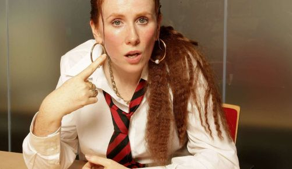Despite all that constant fear mongering and rhetoric by the elite, 52% of the UK voters bravely decided to leave anyway. According to the pollsters Yougov and ICM, many more have joined the cause since the vote.
The institutions and elites and dire apocalyptic warnings have become like crying wolf, they have lost any credibility whatsoever, and just makes those who make them distrusted.
The people have become shame-proof, moan proof. But they remember who calls them names.
I think it is pretty hard to shame anyone into anything, it is not how you win anything. You win by building the biggest coalition. Remain could have possibly built a massive coalition but it didn’t want to, it preferred to call people names, especially the working class and the old.
9. In a galaxy far far away
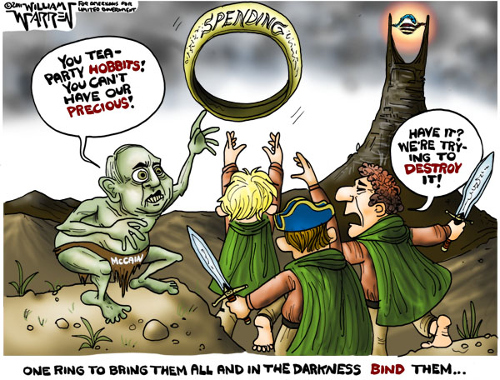Meanwhile on the other side of the pond something else was stirring. In 2011, Republican Senator John McCain called the Republican grassroots “Tea Party Hobbits“
In 2016, Hillary Clinton in her election campaign said:
You know, to just be grossly generalistic, you could put half of Trump’s supporters into what I call the basket of deplorables. Right? The racist, sexist, homophobic, xenophobic, Islamaphobic - you name it. And unfortunately there are people like that. And he has lifted them up.
Donald Trump had over 65 million votes. Any person with common sense knows there is not over 30 million racists and sexists running around.
The situation is not 100% the same as the UK but it is comparable in that it again demonising the population. I always thought Trump would win the Republican primary but this speech was the moment that I knew Hillary would lose.
10. Who is the heck is Trump anyway?
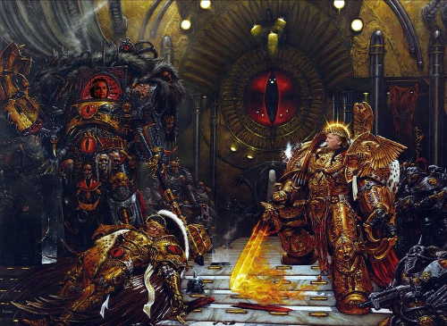The same people calling leavers names, the people with the repeated credibility problems are now telling us that “Trump is literally Hitler”.
The 52% had to become thick skinned already and are suspicious of the elite media and institutions.
I was already slightly immune to this. For almost every US election in my lifetime, the winning President has been called evil or invalid by the losing side. It is all very hysterical until silly season ends and life moves on to some issue of the day.
Reagan was called a second rate actor and conman, until he lead the fight against the Soviet Union and was considered a hero.
Bill Clinton was derided as a socialist who was going to bring back the USSR yet many agree Clinton managed the economy far better than many of his predecessors and successors and kept America safe. It was the end of a golden age which his two successors largely bungled and threw away.
Piers Morgan said that Trump cannot be worse than George W. Bush who lied about weapons of mass destruction to get us into a poorly planned War in Iraq which led to a million civilian deaths and thousands of American, British and other soldiers being killed and even more being maimed.
I have a lot of sympathy for that statement.
Obama was derided as a Kenyan Muslim communist who would introduce death panels to wipe out old people. It is all just hysteria every time.
The greatest American president in history is FDR who saved the world from “literally Hitler” i.e. the actual Hitler.
Based on the limited amount of time that Trump has been in office, perhaps he is somewhere between the extremes of W. Bush and FDR ... as in no-one knows. Presidents rarely are remembered for how they started or what they campaigned for; events happen and the narrative always changes after the fact. Ask me in the year 2047 if Trump was good or bad.
11. Sex is not our business

When President Clinton, a 50 year-old married man, had relations with a naïve and impressionable 22 year-old White House intern, he was criticised domestically.
The UK has quite strong laws and policies on the abuse of a position of trust so a UK politician doing exactly the same thing today would not survive but given the Jimmy Savile revelations who knows what they could get away with back then.
However, in general in the UK, we don’t care about our politicians’ sex lives. This is a good thing.
Most people would find it hard to pick many of our Prime Minister’s spouses or children out in a crowd. We generally leave the spouses and children out of the public limelight. We have the Royal Family for all that.
Andrea Leadsom ended the referendum campaign as one of the winners, a woman on the up, she was in the running to succeed David Cameron as Prime Minister. When she was perceived, perhaps unfairly, to be playing the motherhood card, the media threw it back in her face in the most extreme way and her leadership bid came to a shuddering halt.
The position of the UK government on the Lewinsky scandal was that it was none of our business. When asked about this Blair said the words of Ruth (1:16):
“whither thou goest, I will go; and where thou lodgest, I will lodge: thy people shall be my people, and thy God my God”
Blair was always over the top but here he was correct. The transatlantic alliance between the US and UK is not about the personality of the current leaders, it is a permanent alliance between two peoples with the same language and many of the same values: common law, freedom, the enlightenment, strong defence against our enemies, democracy, rule of law and so on.
What is good for the Democrats is good for the Republicans, let’s not worry what President Trump said to a friend on a bus in 2005. I really don’t want to go down the route of making political capital out of our politicians’ private lives.
As Jesus (may have) said, let him who is without sin cast the first stone.
12. We are not doing a merger

The US and the UK have many differences, often determined by our histories and geography.
America feared the Royal Navy would lead a surprise attack on the US and topple the government, so militias were part of the national defence.
The UK doesn’t have a second amendment because we obviously don’t fear the British invading, we never had a tradition of mass gun ownership. When the British Bill of Rights talked about a right to bear arms it meant pikes. Our traditional solution to national defence was to fill the sea around us with ships and cannons.
During the existential struggle that was World War II, most of the UK population worked in the military or for the state directly or indirectly, everyone became used to getting healthcare and wanted to keep it after the war.
Churchill opposed healthcare free at the point of use in 1945 and the population kicked him out as Prime Minister, when he changed his mind, the voters gave him his job back.
So in the UK, there is a seven decade national consensus behind free at the point of use healthcare.
In the US, you get what you earn. It is the American way. The successful and hard working get the best healthcare in the world and the unlucky, the unsuccessful or lazy get pretty basic care or nothing.
In the UK, it is full on socialised medicine and it is a mean average - everyone gets the same - rich or poor. We do have waiting lists, we do ration. In a crunch, the system does put the needs of children and working age people above the old.
New expensive treatments may not be initially available like in the US. The NHS might sit on its hands and wait for the producer to reduce the price or for a cheaper treatment to come available. Doctors won’t do meaningless tests for the sake of making money. People that are not sick or have minor things that can be self-treated, are told not to bother wasting a doctor’s time.
The minority of rich people who don’t like it, generally move to America and buy healthcare there. However, generally it works. The user has almost no paperwork to fill out.
While we do have waiting lists, you get on with your normal life, when you get to the appointed time, it is generally quite businesslike and there is not a lot of waiting inside the hospital, except when it all goes wrong because of staff shortages or planning foul ups, etc.
Gun control and healthcare and many other issues are domestic policies. We do not need the UK and the US to be the same.
Some people in the UK criticise the wall and Trump’s policies on border control. The UK is surrounded by rough, cold and unforgiving seas on all sides, it is a little bit hypocritical for the UK to criticise. In any case, it is for their own voters to decide.
13. Allies not clones
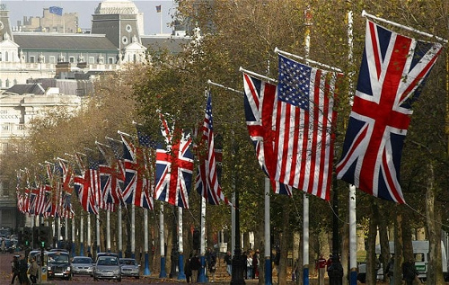The important issue is how can the UK and US work together better to our mutual benefit? I agree with our Prime Minister Theresa May. It doesn’t matter if we in the UK love or hate many of Trump’s policies, we can still work together. We should try to work with everyone. Engagement is the British approach.
The UK has a powerful Navy, it is even more powerful when it works with the US military. We all need to take out ISIS and other terrorist groups.
We have complimentary economies, we can trade together. Trump has criticised Mexico and China for taking American jobs. The UK is not Mexico or China. Currencies are always changing but in January, the figures were:
US minimum wage: $7.25 per hour
UK minimum wage: $9.31 per hour
So the minimum wage is higher in the UK than the US, we can trade together for great mutual benefit with no risk of a race to the bottom.
14. The Hysteria is somewhat external

I am still asking for someone to tell me why President Trump is uniquely more hysteria-inducing than his predecessors. Most criticisms, valid or not, apply to a previous President or other.
It seems to me, the biggest difference between now and when President Bush came into office in 2002, and especially between now and when Reagan came into office in 1980, is the technological difference.
It was through better use of technology that allowed Donald Trump to leapfrog the big corporate media companies and beat 16 other candidates and the Democrats.
However, the same is true on the other side, that there is an echo chamber provided by social media and the World Wide Web which seems to magnify the hysteria.
Meanwhile email and the web give the ability to organise an event or protest far more cheaply and efficiently than in the past.
15. Technology is always more important
2016 was a big year in politics but it is important to remember that politics is merely a response to cultural change which is driven by technological change. Politics is dealing with the symptoms. Technology is the underlying cause.
The invention of the printing press allowed an information revolution which led to the Renaissance, the Enlightenment and the Industrial Revolution. The consequences continued for hundreds of years.
When Sir Tim Berners-Lee created the World Wide Web, it was the final piece that allowed a new information revolution to begin. President Donald Trump and those opposing him are political results of this revolution but they will not be the last. This thing will run for hundreds of years.
As Sir Winston Churchill said, “Now this is not the end. It is not even the beginning of the end. But it is, perhaps, the end of the beginning.”
Leaving the EU in name only
I have never met a Leave voter who wanted to stay inside the Single Market or Customs Union. Quite the opposite. It seems pretty clear to me that leave the European Union means leave it.
The people were the jury
In order to secure re-election, the government offered an EU in-out referendum in their May 2015 election manifesto.
Prime Minister David Cameron tried to do a last-ditch compromise with the EU but it refused to offer any meaningful concessions.
In the 13 months between election and referendum, those who wanted to remain or leave the EU made their arguments in a campaign that (to me) seemed to go on forever.
The whole point of a vote is that it was up to the British public to decide who to believe, to act as a jury to judge whose arguments were right and whose were wrong.
In a historic turnout, 17.4 million people voted to leave the EU, more than have ever voted for anything before.
After the 13 months of the focus being on Brexit, I thought the vote would decide it and the focus of the nation would move on to other topics. No such luck.
Cadaveric spasms
Several politicians and prominent establishment figures on the remain side of the argument have never accepted the result and have been replaying the already too-long campaign all over again.
These establishment figures didn’t learn the most important lesson from the campaign, that the population are not fools and are not scared of doom scenarios.
Whenever such a figure says “I respect the result but” and then gives a ‘project fear’ argument already previously rejected in the vote, it shows they don’t actually respect the result.
After an initial attempt to get a re-run of the vote failed to gain traction, they have moved on to try to re-define what leaving the EU means so that Brexit becomes leaving the EU in name only. It is a sleight of hand trick.
They started with ‘leaving the EU does not mean leaving the single market’ but then News shows and Youtubers compiled clips of all the major figures on both sides before the vote saying leaving the EU would mean leaving the single market.
Now they are focusing on the ‘Staying in the Customs Union’ as if this was some separate project. It is not, the Customs Union is the core of the whole EU. If we stay in the Customs Union, we lose the biggest advantage of Brexit, and for me personally, half of the point of doing it at all.
That advantage is having Free Trade deals with the growing part of the world. I talked more about this several times including in my last post.
In the following table I list 10 Countries that have publicly approached the UK for a trade deal post-Brexit vote. There may be more but these ten will prove the point.
| Country | % world GDP | Population (million) |
|---|---|---|
| Australia | 1.67 | 24.3 |
| Canada | 2.04 | 36.3 |
| China | 15.1 | 1,382 |
| India | 2.99 | 1,326 |
| New Zealand | 0.238 | 4.6 |
| Norway | 0.5 | 5.3 |
| South Korea | 1.87 | 50.1 |
| Turkey | 0.978 | 80.0 |
| Gulf CC* | 1.824 | 53.8 |
| USA | 24.7 | 324.1 |
| Total | 51.91 | 3285.5 |
While declining in importance, the remaining 27 countries of the EU form an important market:
| Country | % world GDP | Population (million) |
|---|---|---|
| EU 27 | 18.432 | 435 |
The GDP of these 10 countries that seek a trade deal with the UK have a combined GDP three times larger than the EU 27 and a population 8 times larger. Almost all of these countries have higher GDP growth than the EU.
Maintaining access to the single market is important, but many times less important than gaining improved access to these 10 global markets. The disparity gets wider every day and every year as the developing world increases both its GDP and its population.
To join the EU, we had to throw away free trade deals that we already had with many of these countries, so being stuck inside the Customs Union has made us much poorer than we could have been, and staying inside it in the future will certainly restrict the UK’s potential economic growth.
Leaving Twice
The raw economic numbers are clear, it is better to have a clean Brexit and offer the EU a bi-lateral free trade deal. It is also nicer to our European neighbours in the long run.
If the government goes with some compromised (‘soft’) form of Brexit that stops the UK making free trade deals, including the power to remove tariffs and agree common standards etc, then there will just be a second round of Brexit.
The campaign to leave the EU really began in 1992, it took 24 years to get enough momentum to win a referendum. The second round will not take so long, we are mobilised and engaged already.
The UK already annoyed our partners by being in the EU but being unhappy tenants - we demanded a (partial) rebate and we refused to join many of the recent programs such as the Euro, Schengen, etc.
We then voted to leave. If the government signs a deal with the EU in 2019 that includes staying within the Customs Union, but then five or ten years later, the people vote to leave that too, we are throwing away any remaining goodwill we have left.
So it much nicer to our European neighbours to leave once, rather than mess them around by partially leaving and then leaving properly.
- Gulf Cooperation Council - Bahrain, Kuwait, Oman, Qatar, Saudi Arabia, and the United Arab Emirates
Occam’s racists
Follow the money
Those upset about Brexit like to see it as an isolated mistake that came from nowhere.
This is not a random event. Most events are never isolated, and Brexit is no different. It is a symptom of a wider trend.
Our exports to the EU have been falling since 2000 and especially since the financial crash of 2008.

Meanwhile our trade with the 84% of people that are not in the EU has been growing.
You don’t have to be an economic genius to work out why this has been happening, the developing world has been booming, while the EU keeps choosing job destroying policies and then when those jobs are gone, uses the decline as an excuse to double down on nonsense and kill some more jobs.
To pick a country almost at random, lets compare the Euro area to India. The quarterly GDP growth of India is five times higher than the Eurozone.
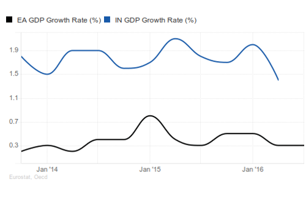This is not a recent trend. Lets look at the ten year graph:
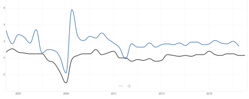India’s growth is always higher than the Eurozone, look at 2011, India can have a battle with Pakistan, risking Nuclear annihilation, and still not go below the Euroarea’s growth.
This is not just a ten year trend, India has beaten European growth my whole lifetime. It is repeated across the developing world. The Eurozone has mostly flat or negative growth, while the developing world keeps doubling its GDP to very surely catches up to our level of wealth.
What these graphs show is that for the UK to maximise its wealth, we have to get out there and be a global trading nation once again.
The 2008 crash showed that the square mile of the city of London cannot pay for 65 million people. Since then we have just been running our country on fumes, currency manipulation and denial. We are going to have to use the whole of the UK and actually make and do things again that people want to pay for.
There is a lot of spare supply side capacity in the Midlands and North, and a lot of the human expertise is still there, grey and soon to leave the workforce but available right now. Luckily, we are waking up just in time.
The remoaners are going to moan for a generation
I ended my post The End of the World is Cancelled saying that Britain and Europe will get beyond Brexit and the relationship will be better than ever.
We won’t have such luck with our domestic malcontents however. The long-term inevitable and unavoidable trends above are totally ignored by Europhiles. It is a zero-sum game where the growing 84% of the world not in the EU don’t exist.
There are a lot of reasons for the professional remoaner class. Here are a few of the most obvious ones:
- People are used to patronage from the EU. However, this was always our money to start with, we can calm the nerves Universities and Museums etc by stuffing their mouths full of gold. There is so much waste and duplication in the EU that we can double the grants of everyone and still be in profit.
- EU salaries are often unbelievably good with endless handy perks. So Brexit has cut off the easy career path for a lot of the establishment who were expecting to upgrade to the European level: judges, politicians, civil servants, policy wonks, etc.
- EU elections happen between UK government elections, so for MPs, it is handy backup option to become an MEP if you are unexpectedly get kicked out by the voters. European elections are based on a list system so it doesn’t matter how personally unpopular you have become. Likewise minsters and high level civil servants can become commissioners and so on.
- Due to the above reduction in insider jobs, the private sector revolving door has never been more powerful. The finance industry has a lot of spare cash (time for more taxes?) and it hasn’t demobilised from the Referendum campaign. MPs like Nick Clegg who seem unlikely to keep their seat at the next election, are gearing up for the next job. Just look how much cash he is already taking from the banks.
I could go on and on, but if you have read my post The Treaty of Losers, you know I just cannot ignore the Occam’s Razor question that is bugging me. Maybe it is nothing to do with these reasons listed above, maybe it is much simpler and more obvious.
Occam’s racists
Until now, because the UK has been controlled by the EU, it could never agree to anything with its Commonwealth allies, the Commonwealth turned into a bit of a talking shop. However, it is turning back into an important body now.
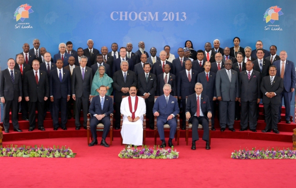As I talked about in previous posts, citizens of the Commonwealth countries volunteered in their millions to fight and die for us in World War II. Why wouldn’t everyone want to re-establish links with these great countries?
Looking back at the first part of this post, we have everything to gain. Who wouldn’t want to do trade deals with the massively growing commonwealth economies?
The answer is the remainer politicians and the establishment experts, who won’t even dare to discuss it. They bang on about having access to a (declining) market of “500 million people” (which includes UK so it is actually 435 million) but they never talk about the 2.3 billion people in Commonwealth or the 6.5 billion in the non-EU rest of the world.
Is this because it will just undermine their argument or is there something simpler going on?
Look back at the Commonwealth Heads of State, now look at the EU leaders:

Do you spot the difference?
The End of the World is Cancelled
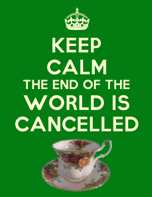In my previous posts, I talked about the importance of us as a country getting involved in the Commonwealth countries. Luckily we have an opening. The Commonwealth countries are still there and they want to work with us, with a bit of humility, the former masters can become the servants. There is a lot of goods, services and expertise we can provide to help the continued development of their countries.
My main point throughout my Brexit posts is that I do not believe that having a bilateral trade arrangement with EU rather than being a member is Armageddon.
Indeed, when we are finally free of the stifling customs union, we can really target improved relations with the rest of the world. Especially the Commonwealth which is now 2.3 billion people and most of world growth, as well as the United States and anyone else who wants to come with us in global free but fair trade.
We have all the cards

There is a lot of bluster from the EU, but that is for domestic consumption and deflect from the fact that national leaders in the EU Council of Ministers thought it could ignore British’s demands for reforms and the British people wouldn’t call its bluff. It did and now we have to move on. There is no going back.
On almost every issue, the EU needs UK more than UK needs the EU.
A nation of shopkeepers
European nations and companies rely on finance from the city of London and they sell to us a lot more than we sell to them.
If the EU does not give tariff free access to the EU, the UK will retaliate in kind. The EU has already lost a lot of jobs due to putting sanctions on Russia, many areas of Europe will be equally badly hit if this happens.
Meanwhile, we have a free floating currency, we can win any tariff war by devaluing the pound. The Bank of England can buy back government debt through quantitative easing. Our exports become cheaper, removing the effect of the EU’s tariff, the government has less debt and domestic production becomes more competitive. Triple win.
Meanwhile, outside the customs union, we can substitute almost any EU product with far cheaper global imports. South African or Australian wine might not initially have the same brand power as French wine but it still gets you drunk, and fashion is not a one way street, they can also move to meet the circumstances.
A nation of ships

UK is the main military power of Europe. European leaders know if they anger the British public so much that defending EU countries becomes politically impossible, then how will it defend itself from Putin’s next adventure?
Meanwhile The EU does not have the money to create an equivalent force and it takes a long time to make the martial culture required to be effective. In Afghanistan, the German troops refused to leave base without British guards. Putin’s men have no such scruples.
A nation of immigrants

Ignoring the Irish people who are unaffected by Brexit due to pre-existing and ancient rights, there are three million great and mostly young people working in Britain from other EU countries. It is going up not down since Brexit. Due to the relative economic strength of the UK.
Those from Eastern Europe send remittances back to their families which is spent in local shops, this is quite important to the economy of many Eastern Europe countries.
Whereas the largest proportion of the one million British people in Europe are retired people in the Sun. On the whole, these seniors don’t need working rights, they don’t take the jobs, they just shop, eat and drink, providing essential extra income into otherwise quite fragile seaside areas.
We can offer whatever terms we want or don’t want. It doesn’t matter, the EU will have to accept them.
The EU deals with both trade and immigration so with Brexit it is all mixed up, however normally immigration shouldn’t actually have that much to do with a trade deal.
We haven’t sent people back to Europe since we beat the viking horde, we won’t start again now. We never had much immigration control against Europeans, I doubt anyone will notice that much of a difference after Brexit. Whatever tests we set (getting to that in a just a second), most people who want to come here will pass them.
The UK government always makes a meaningless immigration target, but that is not important. If we engage more with the 84% of the world that we have been mostly ignoring, then the booming economy will need more labour.
What people want is control. Post-Brexit immigration system needs to have the following features:
- Vet and interview people coming from terrorist hotspots so we don’t take in any more terrorists. Throw out existing known terrorists.
- Pick the best and brightest people we can find from the whole world.
- Treat everyone equally, i.e. don’t discriminate based on race, more on that in a future post.
Once immigration has a defensible system, it will stop being a political football and people will stop worrying about it.
It will all be fine

Since we joined the EU, we outsourced most of the important decisions to Brussels but the employee count of Whitehall and the rest of the British government did not get smaller, it just kept increasing. So over 30 years this increasingly pointless, bloated and atrophied class of bureaucrats is used to being told what to do.
Now these bureaucrats are panicking because finally they have to take some responsibility and do some work. Like an unused muscle it is providing resistance and some of it might be dead weight.
If I was a government department I would be showing how useful I am to the process of creating new UK systems. Obstructions might find themselves being worked around and replaced.
Assuming the government can provide leadership and overcome this addiction to sloth, Brexit is going to be fine.
It is interesting how the government created a new department for Brexit and a new department for International Trade. A new broom can clean best.
A full Brexit will finally lance the boil of frustration over Europe and allow us all to get on with things. As I said before in my post “Good fences make good neighbours”, Britain will go from being an unhappy tenant of the EU to Europe’s most supportive neighbour and ally.
We will get a workable free trade deal. The rest of Europe will get over it, indeed Britain never joined the Euro, Schengen, Fiscal Compact and dozens of other things, so in a decade, people in Europe will have forgotten that the UK was ever a member.
No such luck with our own domestic moaners, they will go on for a generation. More on that later.
The Treaty of Losers
Part of our failed membership of the European Union involved being in the ‘outer countries’.
Whenever a European Union politician wanted to dismiss the UK’s input from a decision, it would always bring up that it is not one of the “Inner Six” who are the ones who should have the final say. What is common about the Inner Six is that they were either all Axis countries or surrendered at the first major German offensive. They are really the “Inner Losers” of World War II.
| Country | Date of Surrender to Axis |
|---|---|
| Germany | Axis |
| Italy | Axis |
| Luxembourg | 10 May 1940 |
| Netherlands | 14 May 1940 |
| Belgium | 28 May 1940 |
| France | 22 June 1940 |
These are the countries that wrote the Treaty of Rome.
Here are the signatures:
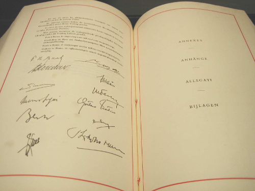And here they are, the signatories, signing the above treaty. Look how diverse are the signatories and the observers.
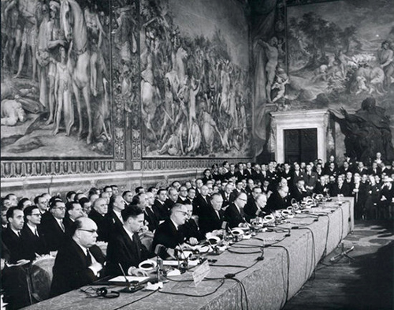Who are these identical clone-like guys that get to represent their countries, are they some kind of war heroes? Sadly not, with a couple of exceptions, they managed to quietly shirk out of World War II despite being of fighting age. The war barely interrupted their wining and dining.
| Signatory | Role in World War II |
|---|---|
| Paul-Henri Spaak | Fled to London |
| Jean-Charles Snoy et d’Oppuers | Labour Volunteer in Belgium |
| Konrad Adenauer | In hiding (in his friends’ mansions) |
| Walter Hallstein | Nazi officer (artillery), got captured by Allies, Prisoner of War |
| Christian Pineau | French Resistance, got captured in 1943, rest of war in prison camp |
| Maurice Faure | Professor, joins resistance in 1944 (after Allies already winning) |
| Antonio Segni | Local government politician in Sardinia |
| Gaetano Martino | University lecturer |
| Joseph Bech | Fled to London |
| Lambert Schaus | Town Councillor, arrested in 1941, built motorways for rest of war |
| Joseph Luns | Got a post at the Dutch embassy in London |
| Johannes Linthorst Homan | Chairman of the Dutch Olympic Committee |
In this signing ceremony, they are meeting on the Capitoline Hill, the very centre of the Roman Empire. This symbolism is not to be ignored. They specifically chose to wrap this new Union in the symbolism of the previous attempts to unite the peoples of Europe ( see Rome Vs the Matrix for a lot more on this topic).
This treaty of signed by War dodgers of the Axis countries that just lost World War II, yet in their head they Roman emperors.
Union of Europeans
The EU traces its origin to this Treaty of Rome, the first line is:
DETERMINED to lay the foundations of an ever-closer union among the peoples of Europe,
On that same first page, we have a resolution “to eliminate the barriers which divide Europe” and to ensure “harmonious development” by “reducing the differences existing between the various regions”. It goes on in much the same way for 80 pages.
The implication of it all is that Europeans are a single people accidentally separated by borders and they should fix it with an ever closer union.
In my post Rome Vs the Matrix, I talked about how from Roman times until today, they have been trying to reunite Continental Europe.
The most immediate pre-brexit example is of course Hitler’s attempt to unify Europe in a Nazi Empire which I talked about in the post Godwin part two.
In short, the all white master race lost to the multi-racial armies of the Allies.
Both the Nazi empire and the EU follow an atheistic secular scientific approach, with religion and Christian culture pushed deep out of public life.
Most importantly they both use Roman era symbolism for their ends. The EU is a Union of White majority countries, with a customs union of external tariffs seeking to partially insulate the European economies from the rest of the world.
If you are from Bulgaria or Finland, you have freedom of movement to work and live into the UK, but if you are from Kenya or India, you do not. The former countries are white European countries, the latter are not. I am not the only one who spotted this.
Mein Kampf is written by a deranged socialist artist who became a dictator. The treaty of Rome is written by lawyers. However, they both have this concept of a United European people, both times they have a white majority, how convenient.
The deep pool of racism that led the Axis populations to condone Hitler didn’t magically disappear when the allied soldiers rolled in.
This concept of a unified European people is the middle-class educated lawyer’s version of a master race. Once you understand this, all the white supremacist euphemisms used knowingly and unknowingly by Europhiles become clear.
For myself, I don’t believe in this concept of a special united European people. I think someone from South Africa or Pakistan is equal to someone from Finland or Slovakia. We should work with everyone and not put up barriers to the 84% of humanity that are not in the EU, we should be equally open to everyone.
Godwin part two

I had meant to write a sequel to my 2007 post on Godwin’s law. Over, ten years later, here I am.
The book Mein Kampf is the demented ravings of Hitler. It comes in two parts. The first volume is an autobiography and the second is his manifesto of National Socialism and his plan for a “new order”, which later he had an opportunity to try out.
Hitler’s philosophy was socialist in that he aimed to abolish individualism. He believed this process should begin from birth, and children should be educated in a system of total control, that minimises parental influence in favour of the ideas of the Nazi state.
The book also spends time explaining Hitler’s atheism, and his desire to remove Christianity from all public society. Obviously I don’t need to explain his views toward Jews. Hitler believed in pre-Christian neo-pagan style beliefs with his famous vegetarianism. He believed the pre-Christian Roman Era under Julius Caesar and Emperor Augustus was the high point of humanity.
Hitler believed in allying with certain Christian groups if it suited his strive for power, at least until after he had created his empire then he could totally abolish it.
For Hitler, Christianity is a Jewish plot to keep Europeans from understanding their true ancient “Aryan identity”, their natural superiority from being white and more highly evolved. Everyone else, including Slavic peoples, were Untermensch, subhumans.
Albert Speer, quoted Hitler in his book Inside the Third Reich:
“You see, it’s been our misfortune to have the wrong religion. Why didn’t we have the religion of the Japanese, who regard sacrifice for the fatherland as the highest good? The Mohammedan religion too would have been much more compatible to us than Christianity. Why did it have to be Christianity with its meekness and flabbiness?”
Instead of a heavenly Kingdom, Hitler believed it was his destiny to create a united Europe with himself at the centre. A new Roman Empire, with himself as Emperor. An Empire without meat, smoking or alcohol.
When George Orwell reviewed the book for a magazine, he called Hilter’s vision of a united Europe: “a horrible brainless empire”.
His atheistic secular scientific approach did mean he spent an enormous sum on Universities and research and development. Which is why at the end of World War 2, the allies raced with each other to grab all the Nazi scientists.
However, Nazi Germany couldn’t get many of their innovations into production in time to help prevent the total loss to the Allies. As it turned out, this master race of white Europeans wasn’t as good as it thought it was.
As I talked about in the previous posts, it is important not to forget how diverse the Allied armies were. The white European master race lost to the mixed multi-racial British Empire army, the segregated multi-racial American army and the Slavic Soviet army.
People are just people. There is no white superiority, if there was Hitler would have won the Second World War. There is no need to repeat the monstrous experiment.
How socialist National Socialism actually was is one of those issues to be debated forever.
The ambition to abolish Christianity is always the hallmark of authoritarianism, likewise the desire for the state to indoctrinate children instead of letting parents teach children their own ideas.
More superficially, whenever a vegetarian or teetotaler imposes their policy on the majority, I think of Hitler’s plan for his eventual joyless Empire.
The World According to Clinton’s Email

Wikileaks has once again come up with some fantastic insights into how the elite run the world. Reading the different leaks from people associated with Hillary Clinton is fascinating. We are really getting a deep view into the globalist mindset.
The emails showing what Hillary was promising to her wall street donors are particularly enlightening.
If her actions and choices seem incomprehensible, you have understand that Clinton and her friends have a very different view of the world than us normal people. Especially those of us who hold to romantic ideas like God and country and loving your neighbours as yourself.
As always, click to enlarge the images.
Different crib

If you think that Hillary’s best known house, the house in Chappaqua, is pretty reserved and tasteful for the elite, it is, but you have to remember that this is not a ranch in the middle of the Texan desert, it is at the end of a private road in the suburbs of New York City. It is a mega-great house.

The house is surrounded by a large white wall, and a manned guardhouse stands by the entrance to the property. Yes, the anti-wall Clinton likes her own walls very much.
The red barn at the back is not for chickens, it is where her household staff and armed security are hidden away.
Meanwhile a small fleet of armoured vehicles provide suitable transport for any occasion.

Different services

In 2016 figures, the per capita disposable income of an American citizen is $39,190. Chelsea Clinton went to a school where tuition and fees cost $48,160 in 2016/2017. And yes, it has a massive green campus with a giant fence around it. The school campus makes Clinton’s house look like a hovel.
If Hillary doesn’t care about what provision is needed to handle mass immigration to inner cities, it is partly because she doesn’t need to use the overwhelmed schools or local services herself.
If Hillary seems a bit disrespectful towards the police, it is because she doesn’t need them, she has her own armed guards.
We can go on like this forever, so lets zoom out a bit.
Different Map
Almost every country has at least one thing to be proud of. As the British people, we are proud of our hard won freedoms and the communal institutions that our ancestors left us such as the NHS, our Royal Navy, our Royal family, our state school system, our ancient churches, castles, national parks and so on.
This means nothing to Hillary and their tribe, they are globalists because they are so rich they don’t want or need a nation state to look after them. From the first class cabin and the private jet, every country looks the same, the same hotel chains, the same exclusive shops, etc. The rich already live in a generic border free world.
If we draw a map of world according to Hillary’s email, it will look like this (map credit to Wikipedia, click on the map below to enlarge):
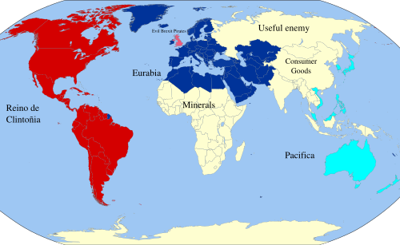{kind=link}
{kind=link}
How to run the world
The power structures of the globalist world view are really interesting but also quite basic. There are four levers they have to control the world. I will explain this using the above map.
- Trade policy
To Hillary and her ilk, California is the capital of the world, eventually drawing all of the Americas into a “greater California”.
By combining this Reino de Clintoñia with its two major colonies of Eurabia and Pacifica, we have a giant and generic service economy, ready to serve the elite’s every desire.
All the trade agreements like TTIP, TPP and the EU are there to make sure the servants do not become too uppity and to remove any barriers to the maximisation of profits for Goldman Sachs bankers and the others who fund Clinton and her friends.
- Patronage
As well as unifying the legal and trade systems, patronage is used to keep potentially dangerous alternate power structures such as intellectuals, religion and the media on board. Internal ‘markets’ and competition for grants keep the universities, NGOs and charities as useful idiots spreading the globalist gospel.
It is important to create pseudo-scientific pretences of why this globalist neo-feudal system benefits the population more generally, as opposed to more Occam’s razor like solutions such as lets take the rich’s wealth away and use it to cure cancer.
This is also why the current move towards cultural Marxism and identity politics suits the elite so well. David Cameron and the American democrat/republican one party state are happy to hand out gay marriage because it doesn’t cost them any money. Here have all the pronouns you want, just don’t ask for decent housing for the poor, infrastructure or services.
- Consumer goods and entertainment
2000 years ago, the Roman writer Juvenal coined the phrase ‘panem et circenses’ (bread and circuses) to explain how the elite kept the masses under control.
The classical theory of why the Roman empire fell includes the observation that through insecurity of trade routes and inflation, Rome stopped being able to provide affordable consumer goods to the people.
The global leaders today do not make the same mistake, they keep their servant class in check by exploiting the poor of the world. They keep Chinese goods cheap, and if the Chinese get sick of making plastic crap for the world, they keep plenty of other Asian countries poor as a backup, after that there is Africa, which is currently just used as a giant shop of minerals to be exploited.
[I have talked a lot lately in this blog about how Africa bears the brunt of the current system of world trade, so I don’t want to sound like a broken record, needless to say, every trade deal they make always includes massive tariffs against Sub-Saharan African countries.]
Meanwhile, we are in an entertainment golden age, no end of TV shows, films and sports are provided to keep the minds of the servants busy. While there is an attempt to reclaim costs to pay the cast and crew and so on, unauthorised distribution of media is rampant and tolerated as only thing worse than the people watching unauthorised TV is the people not watching it.
If the mainstream media is rejected by the people, then a major form of control is lost, thus the mad dash to control and censor the Web.
- Useful enemy
Whenever Clinton and other Western politicians get into trouble, Russia and a few other useful enemies are wheeled out as a useful excuse for pretty much anything.
There is a Goldilocks zone for useful enemies, not too big and not too small, Putin was getting too big for his boots so sanctions were used to make Russia’s GDP smaller than Australia, meanwhile Iran was on the verge of total collapse so Obama and Clinton recently removed its sanctions and bailed out the regime with billions of dollars.
Another way
We are finally at a level of technology where we can in our lifetimes, foresee a future free of disease, want or waste, where robots do the work and people are free.
After the Attack on Pearl Harbor, when FDR decided to pursue a war across two oceans, the US had no ability to fight a major foreign war on one front, let alone two. Yet he pulled everyone together, rich and poor, black and white, and together they got the job done.
Setting a national goal and putting the resources of the whole society into it can achieve massive things:
“I believe that this Nation should commit itself to achieving the goal, before this decade is out, of landing a man on the moon and returning him safely to earth.”
When JFK said the above quote, they had a general idea of the physical principles but no practical clue how to achieve it. We now know far more about cancer and other diseases than we knew about the moon in 1961.
I want a leader that says we will commit ourselves to curing cancer in ten years, to curing type 1 diabetes, to ending asthma in children.
I want a leader that says we are going to digitise our cars so that in five years time, the number of child deaths on the road is 0.
I want a leader that says we will build a house for every person who needs one, even if we have to take away a little land from wealthy estates.
What is not important

The whole reality TV side of things I don’t really care about. I don’t care if Jeremy Corbyn doesn’t wear a tie or Boris Johnson has made inappropriate jokes about foreign dictators. I don’t care if Labour MPs feel unhappy with Corbyn’s management style or Theresa May is alienating the 48% (which is now more like the 13% according to the latest polling but lets not get off track).
I do think it is somewhat odd that almost all of the Labour shadow cabinet come from London while almost all of the Tory Cabinet come from the home counties, but if they were the best people they could get, then I guess I don’t care.
I don’t care if Trump said something sexist 20 years ago, I don’t care if he makes his staff lose weight, I don’t care what he did when we was a billionaire playboy and a businessman.
I don’t care that the Clintons have a weird open marriage where, to use Hillary’s own terminology, she has to herd around Bill’s discarded ‘bimbos’. I don’t care how much Hillary swears in her emails. I don’t care she called her own party “a bucket of losers.” I don’t care if she coughs constantly for 8 years in a row.
I don’t care about temperament, I don’t care about who is the best manager. I don’t care who is the best husband or wife or mother or father.
I just want them to put these lilliputian tabloid issues aside and have some real policies to do something worthwhile for the actual voters.
Champions not tokens
The lives of the elite and the normal people are divided as never before. However, we don’t need leaders who feign the common touch. We don’t want token leaders, we want champions of the people.
Churchill was born into vast wealth, he was a drunk who gambled away the wealth of two great families and said many outrageous and sexist things, he would have probably been called deplorable and irredeemable by Hillary Clinton.
However, Churchill put all his privileged background and personal contacts into one aim, being the best military leader he could be.
When the time came that Britain was in the existential crisis of World War II, Churchill, being friends or related to much of the elite, knew exactly where their money was. The rich did not get off easy in cash terms and many of the Lordly estates were broken up. According to the national archives:
“a total of 14.5 million acres of land, 25 million square feet of industrial and storage premises and 113,350 holdings of non-industrial premises were requisitioned by the State.”
If we can raid the rich to defeat Hitler, can’t we raid them again to defeat cancer?
Stylish Super Skulk

The last time I talked about the web browser, I was technically speaking about Iceweasel. For the last decade, Linux users like me have known the default browser that Debian ships under the name of Iceweasel.
In 2006, due to some hysteria over trademark protection and typical West Coast America “we know better than you” attitude, Mozilla told Debian it could not use the name Firefox or the Firefox logo.
Can we even use it here? Well since we don’t want to be told off by Mozilla’s logo police, we can use images of some beautiful people who have made their own dramatic and artistic costume interpretations of the logo. This blog is 90% about cool and silly pictures after all.
After 10 years of Debian using the name Iceweasel and its own logo, eventually, Mozilla gave up and asked Debian to use the normal name and logo. Lets celebrate with another costume:

Thanks Iceweasel for your service, we will miss you. LWM published a longer discussion of this change. Incidentally, Google’s Browser is still called Chromium instead of Chrome on the Debian Linux platform. I could only find one Chrome costume:

He (or she) looks pretty happy.
Meanwhile, this week Firefox 48 has been released which, among other things, has caught up with a feature that Chromium has had for a while, namely multiple processes.
Making the browser render web content or play media in a subprocess is obviously a win for security and performance, especially on Liunx.
Processes are the main native form of efficient resource allocation on Linux, so now Firefox is using multiple processes it is finally working with the grain rather against it.
It is still early days. Nothing has crashed for me yet, but I am keeping the Firefox that Debian distributes (which at time of writing is version 45), around just in case. You might want to consider doing the same, especially if you are using extensions which may not work in the multiprocess mode yet.
To try it out, download Firefox. By the way in my last post about Firefox, I talked about how to run multiple Versions of Firefox and how to create an extra profile, which might be handy.
Firefox is pretty cautious about turning multiprocess mode on but putting about:status into the browser will tell you if it is on or off. As in the image below:
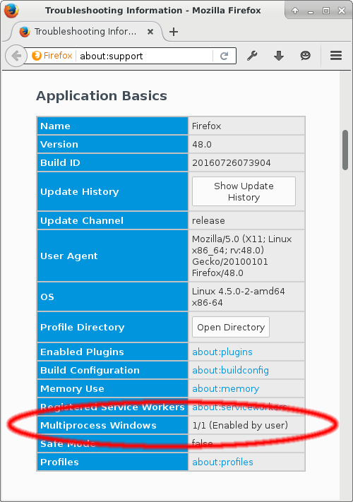If you find it is off, you can make a new profile (as I just mentioned) or you can open about:config and toggle the setting called browser.tabs.remote.autostart to true. Then you can go back to about:status and see if it worked.
It still might be off because of whatever reason, i.e. they it might break an extension or whatever. If you want to push on anyway then you have to open about:config again and make a new boolean setting called browser.tabs.remote.force-enable and set that to true. Find more instructions here.
So well done to all the Mozilla developers and volunteers who wrote and shipped that. Just for you, another of those great Firefox costumes:
4. Social Networks Suck
To bridge this easy to read/hard to write gap, the social networks jumped in. These are easy for people to quickly post their cat photos and show off.
The concept ‘net neutrality’ describes how the WWW is (supposed to be) broadly content indifferent, it is just a pipe to push information through. Mesh networks described above take this concept even further.
Social networks are a downgrade from WWW, in that now content is inside silos that are centrally controlled by a private company with no requirement to enforce freedom of speech.
James Delingpole wrote an article about his problems being a centrist/conservative journalist and media personality using West Coast controlled social networks to promote his work:
Sounds like a lot of work.
James Delingpole has a nice podcast, if his content is good enough, his fans will share it, it doesn’t matter if he is on Facebook himself.
I am probably too old for Milo, but I notice that every time Milo does something, it still appears on Twitter, despite Milo being banned, because his limitless undergraduate fans share it.
Many years ago, I used to play MUD games and even wrote one once. One famous MUD had inside its introductory help file, something like “don’t base your life on a game you don’t control and can be banned from.”
Kind of why I stopped playing MUDs, when you find a MUD that doesn’t ban you, they tend to put you in charge. You cannot really play in peace as a casual player, even if you try to, someone will redesign the world half way through and negate all the time you put into building a character.
Another way of putting it is James is like an Ambassador to the USSR.
An Ambassador to a hostile country should always know they are on borrowed time. At any time the host country can revoke the credentials and force a replacement.
Maybe the Ambassador did something wrong, maybe not, maybe they were just too effective or were not able to be turned.
The Ambassador shouldn’t go native and base his life on being able to stay.
To take a different analogy, Western bishops used diplomatic charm to try to protect Russian Christians from being killed by the Atheist USSR.
No doubt useful work but appeasement and trying to fix the USSR wasn’t what won the cold war.
It was consumer goods, making the free world demonstrably better for ordinary people, this is what brought down the USSR.
Facebook is a totalitarian state, some people thrive there but generally, it is better to get out while you can.
The semi-free world is the WWW, the really free world is the Mesh, the darknet, peer-to-peer networks and Tor.
If possible, I want to build up the free world but it will happen anyway if it is meant to. Technology may or not be imbibed with a spirit, but it seems to have an inevitability about it.